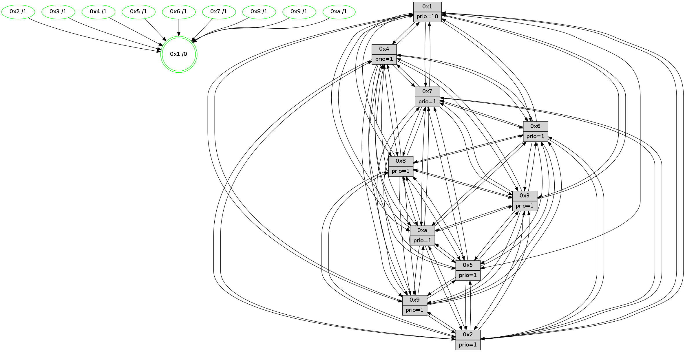

>> << IDX [start] -100 -25 -5 +0 +5 +25 +100 [1420.64059496]
 Previous packets
----------------------------------------------------------------------
1415.123674 beacon01(faad) #0 coord=01,02,03,04,05,06,07,0a,09,08 cycle=688.0ms assoc
-- color-indic=1 64 86 f5
1415.133657 beacon02(faad) #0 coord=01,02,03,04,05,06,07,0a,09,08 cycle=688.0ms assoc 64 15 c4
1415.143658 beacon03(faad) #0 coord=01,02,03,04,05,06,07,0a,09,08 cycle=688.0ms assoc 64 6f 89
1415.153658 beacon04(faad) #0 coord=01,02,03,04,05,06,07,0a,09,08 cycle=688.0ms assoc 64 18 63
1415.163657 beacon05(faad) #0 coord=01,02,03,04,05,06,07,0a,09,08 cycle=688.0ms assoc 64 62 2e
1415.173658 beacon06(faad) #0 coord=01,02,03,04,05,06,07,0a,09,08 cycle=688.0ms assoc 64 ec f9
1415.183657 beacon07(faad) #0 coord=01,02,03,04,05,06,07,0a,09,08 cycle=688.0ms assoc 64 96 b4
1415.193663 beacon0a(faad) #0 coord=01,02,03,04,05,06,07,0a,09,08 cycle=688.0ms assoc 64 e7 bf
1415.213663 beacon08(faad) #0 coord=01,02,03,04,05,06,07,0a,09,08 cycle=688.0ms assoc 64 13 25
1415.225210 [Hello(9): seq=846 sym=2,5,3,4,7,6,8,10,1 sysInfo=hasWarning stat=2:1,6,2,11/5:2,7,2,8/3:2,11,12,4/4:10,5,7,3/7:8,15,9,5/6:0,13,0,14/8:7,13,7,6/10:11,14,4,0/1:13,5,8,1]
1415.229329 [Hello(10): seq=835 sym=6,2,3,8,7,5,9,4,1 sysInfo=hasWarning stat=6:3,3,2,4/2:0,11,6,0/3:6,10,10,15/8:3,9,3,3/7:10,0,0,10/5:11,10,14,1/9:6,9,3,1/4:15,9,13,3/1:11,7,4,1]
1415.232500 [Color(1) seq=582 @0:0 prio=10]
1415.237891 [Hello(7): seq=902 sym=2,3,5,6,4,8,9,10,1 sysInfo=hasWarning stat=2:2,1,9,4/3:10,8,13,3/5:7,5,12,3/6:7,4,10,12/4:2,0,9,2/8:2,6,1,0/9:13,10,10,2/10:7,7,2,7/1:1,14,5,0]
1415.240422 [Hello(8): seq=846 sym=5,2,3,7,9,6,4,10,1 sysInfo=hasWarning stat=5:5,8,8,1/2:13,10,1,12/3:7,12,7,4/7:14,6,3,2/9:6,2,10,5/6:12,11,2,0/4:8,0,5,2/10:2,15,0,5/1:10,12,9,0]
1415.242947 [Color(7) seq=430 @0:0 prio=1]
1415.244205 [Color(8) seq=501 @0:0 prio=1]
1415.247312 [Hello(4): seq=902 sym=5,8,6,2,3,9,7,10,1 sysInfo= stat=5:4,4,9,2/8:3,9,1,0/6:13,2,2,15/2:7,2,10,1/3:12,14,4,15/9:2,6,0,2/7:13,7,1,0/10:11,0,3,14/1:5,4,8,1]
1415.250144 [Color(4) seq=441 @0:0 prio=1]
1415.251747 [Color(5) seq=449 @0:0 prio=1]
----------------------------------------------------------------------
1415.911805 beacon01(faad) #0 coord=01,02,03,04,05,06,07,0a,09,08 cycle=688.0ms assoc
-- color-indic=1 64 42 fb
1415.921787 beacon02(faad) #0 coord=01,02,03,04,05,06,07,0a,09,08 cycle=688.0ms assoc 64 d1 ca
1415.931786 beacon03(faad) #0 coord=01,02,03,04,05,06,07,0a,09,08 cycle=688.0ms assoc 64 ab 87
1415.941788 beacon04(faad) #0 coord=01,02,03,04,05,06,07,0a,09,08 cycle=688.0ms assoc 64 dc 6d
1415.951786 beacon05(faad) #0 coord=01,02,03,04,05,06,07,0a,09,08 cycle=688.0ms assoc 64 a6 20
1415.961787 beacon06(faad) #0 coord=01,02,03,04,05,06,07,0a,09,08 cycle=688.0ms assoc 64 28 f7
1415.971788 beacon07(faad) #0 coord=01,02,03,04,05,06,07,0a,09,08 cycle=688.0ms assoc 64 52 ba
1415.981794 beacon0a(faad) #0 coord=01,02,03,04,05,06,07,0a,09,08 cycle=688.0ms assoc 64 23 b1
1416.001793 beacon08(faad) #0 coord=01,02,03,04,05,06,07,0a,09,08 cycle=688.0ms assoc 64 d7 2b
1416.013652 [Hello(5): seq=903 sym=7,6,4,3,1,9,8,10,2 sysInfo=hasWarning stat=7:5,1,15,1/6:6,12,14,4/4:10,7,7,0/3:10,10,12,2/1:13,5,11,0/9:11,3,0,11/8:7,14,5,4/10:11,0,4,9/2:13,8,10,7]
1416.017231 [Color(10) seq=492 @0:0 prio=1]
1416.018871 [Color(9) seq=462 @0:0 prio=1]
1416.020449 [Hello(6): seq=903 sym=3,2,5,4,7,9,8,10,1 sysInfo=hasWarning stat=3:2,6,3,0/2:5,7,3,0/5:15,3,6,4/4:9,12,11,9/7:15,13,7,0/9:1,10,15,11/8:8,3,0,6/10:10,0,7,13/1:13,10,9,1]
1416.027706 [Color(2) seq=479 @0:0 prio=1]
1416.033522 [STC(1) #0.244 tree-change,inconsistent-stability,stable,to-color d=0]
1416.037846 [Hello(3): seq=903 sym=1,7,6,2,4,8,9,10,5 sysInfo=hasWarning stat=1:7,4,13,0/7:6,10,13,15/6:0,10,6,1/2:6,2,2,2/4:14,3,0,14/8:14,10,7,5/9:11,8,11,1/10:1,3,1,5/5:5,15,14,1]
1416.042258 [Color(3) seq=532 @0:0 prio=1]
----------------------------------------------------------------------
1416.699934 beacon01(faad) #0 coord=01,02,03,04,05,06,07,0a,09,08 cycle=688.0ms assoc
-- color-indic=1 64 fe fe
1416.709916 beacon02(faad) #0 coord=01,02,03,04,05,06,07,0a,09,08 cycle=688.0ms assoc 64 6d cf
1416.719917 beacon03(faad) #0 coord=01,02,03,04,05,06,07,0a,09,08 cycle=688.0ms assoc 64 17 82
1416.729916 beacon04(faad) #0 coord=01,02,03,04,05,06,07,0a,09,08 cycle=688.0ms assoc 64 60 68
1416.739919 beacon05(faad) #0 coord=01,02,03,04,05,06,07,0a,09,08 cycle=688.0ms assoc 64 1a 25
1416.749917 beacon06(faad) #0 coord=01,02,03,04,05,06,07,0a,09,08 cycle=688.0ms assoc 64 94 f2
1416.759918 beacon07(faad) #0 coord=01,02,03,04,05,06,07,0a,09,08 cycle=688.0ms assoc 64 ee bf
1416.769921 beacon0a(faad) #0 coord=01,02,03,04,05,06,07,0a,09,08 cycle=688.0ms assoc 64 9f b4
1416.789923 beacon08(faad) #0 coord=01,02,03,04,05,06,07,0a,09,08 cycle=688.0ms assoc 64 6b 2e
1416.801226 [STC(2)->1 #0.244 tree-change,inconsistent-stability,stable,to-color d=1]
1416.802679 [Hello(10): seq=836 sym=6,2,3,8,7,5,9,4,1 sysInfo=hasWarning stat=6:4,4,2,4/2:0,12,6,0/3:7,11,10,15/8:4,10,3,3/7:11,1,0,10/5:11,11,14,1/9:6,10,3,1/4:0,10,13,3/1:12,8,5,1]
1416.805178 [Hello(9): seq=847 sym=2,5,3,4,7,6,8,10,1 sysInfo=hasWarning stat=2:2,7,2,11/5:3,8,2,8/3:3,12,12,4/4:11,6,7,3/7:9,0,9,5/6:1,13,0,14/8:8,14,7,6/10:12,14,4,0/1:13,6,9,1]
1416.807728 [STC(5)->1 #0.244 tree-change,inconsistent-stability,stable,to-color d=1]
1416.812145 [STC(4)->1 #0.244 tree-change,inconsistent-stability,stable,to-color d=1]
1416.813959 [Color(5) seq=450 @0:0 prio=1]
1416.816030 [Color(4) seq=442 @0:0 prio=1]
1416.817646 [Color(1) seq=583 @0:0 prio=10]
1416.819021 [STC(10)->1 #0.244 tree-change,inconsistent-stability,stable,to-color d=1]
1416.820322 [Hello(7): seq=903 sym=2,3,5,6,4,9,10,1 sysInfo=hasWarning stat=2:2,2,9,4/3:11,9,13,3/5:8,6,12,3/6:8,5,10,12/4:3,1,9,2/9:14,11,10,2/10:7,8,2,7/1:1,14,6,0]
1416.822888 [Hello(8): seq=847 sym=5,2,3,7,9,6,4,10,1 sysInfo=hasWarning stat=5:6,9,8,1/2:13,11,1,12/3:8,13,7,4/7:14,6,3,2/9:7,3,10,5/6:13,12,2,0/4:9,1,5,2/10:2,0,0,5/1:10,12,10,0]
1416.825426 [STC(6)->1 #0.244 tree-change,inconsistent-stability,stable,to-color d=1]
1416.827618 [STC(7)->1 #0.244 tree-change,inconsistent-stability,stable,to-color d=1]
1416.830722 [TreeStatus(6)-.->1 #0.244 tree-change,inconsistent-stability,stable child=1]
1416.834747 [STC(8)->1 #0.244 tree-change,inconsistent-stability,stable,to-color d=1]
1416.837655 [TreeStatus(8)-.->1 #0.244 tree-change,inconsistent-stability,stable child=1]
1416.839187 [Color(8) seq=502 @0:0 prio=1]
1416.843616 [Color(7) seq=431 @0:0 prio=1]
----------------------------------------------------------------------
1417.488065 beacon01(faad) #0 coord=01,02,03,04,05,06,07,0a,09,08 cycle=688.0ms assoc
-- color-indic=1 64 2a cb
1417.498047 beacon02(faad) #0 coord=01,02,03,04,05,06,07,0a,09,08 cycle=688.0ms assoc 64 b9 fa
1417.508046 beacon03(faad) #0 coord=01,02,03,04,05,06,07,0a,09,08 cycle=688.0ms assoc 64 c3 b7
1417.518046 beacon04(faad) #0 coord=01,02,03,04,05,06,07,0a,09,08 cycle=688.0ms assoc 64 b4 5d
1417.528048 beacon05(faad) #0 coord=01,02,03,04,05,06,07,0a,09,08 cycle=688.0ms assoc 64 ce 10
1417.538048 beacon06(faad) #0 coord=01,02,03,04,05,06,07,0a,09,08 cycle=688.0ms assoc 64 40 c7
1417.548047 beacon07(faad) #0 coord=01,02,03,04,05,06,07,0a,09,08 cycle=688.0ms assoc 64 3a 8a
1417.558052 beacon0a(faad) #0 coord=01,02,03,04,05,06,07,0a,09,08 cycle=688.0ms assoc 64 4b 81
1417.578054 beacon08(faad) #0 coord=01,02,03,04,05,06,07,0a,09,08 cycle=688.0ms assoc 64 bf 1b
1417.589637 [Hello(1): seq=813 sym=4,2,9,5,10,3,8,6,7 sysInfo=coloring-mode-on,ColoringModeRequestCalled stat=4:11,13,11,4/2:13,1,5,5/9:12,5,6,2/5:13,5,7,9/10:13,7,8,8/3:1,14,8,11/8:10,4,7,4/6:4,9,6,2/7:12,9,13,2]
1417.593206 [Color(9) seq=463 @0:0 prio=1]
1417.597456 [Color(10) seq=493 @0:0 prio=1]
1417.599096 [Hello(6): seq=904 sym=3,2,5,4,7,9,8,10,1 sysInfo=hasWarning stat=3:3,7,3,0/2:5,8,3,0/5:0,3,6,4/4:9,12,11,9/7:15,14,7,0/9:1,10,15,11/8:8,4,1,7/10:10,0,7,13/1:13,10,10,1]
1417.602862 [Color(6) seq=536 @0:0 prio=1]
1417.605452 [Color(3) seq=533 @0:0 prio=1]
1417.606696 [Color(2) seq=480 @0:0 prio=1]
1417.612399 [Hello(5): seq=904 sym=7,6,4,3,9,8,10,2 sym= sysInfo=hasWarning stat=]
----------------------------------------------------------------------
1418.276197 beacon01(faad) #0 coord=01,02,03,04,05,06,07,0a,09,08 cycle=688.0ms assoc
-- color-indic=1 64 96 ce
1418.286179 beacon02(faad) #0 coord=01,02,03,04,05,06,07,0a,09,08 cycle=688.0ms assoc 64 05 ff
1418.296180 beacon03(faad) #0 coord=01,02,03,04,05,06,07,0a,09,08 cycle=688.0ms assoc 64 7f b2
1418.306180 beacon04(faad) #0 coord=01,02,03,04,05,06,07,0a,09,08 cycle=688.0ms assoc 64 08 58
1418.316180 beacon05(faad) #0 coord=01,02,03,04,05,06,07,0a,09,08 cycle=688.0ms assoc 64 72 15
1418.326182 beacon06(faad) #0 coord=01,02,03,04,05,06,07,0a,09,08 cycle=688.0ms assoc 64 fc c2
1418.336181 beacon07(faad) #0 coord=01,02,03,04,05,06,07,0a,09,08 cycle=688.0ms assoc 64 86 8f
1418.346186 beacon0a(faad) #0 coord=01,02,03,04,05,06,07,0a,09,08 cycle=688.0ms assoc 64 f7 84
1418.366186 beacon08(faad) #0 coord=01,02,03,04,05,06,07,0a,09,08 cycle=688.0ms assoc 64 03 1e
1418.377719 [Hello(9): seq=848 sym=2,5,3,4,7,6,8,10,1 sysInfo=hasWarning stat=2:3,8,2,11/5:4,9,2,8/3:3,13,12,4/4:11,7,8,3/7:10,1,10,5/6:2,14,1,15/8:9,15,8,7/10:12,15,5,0/1:14,7,9,1]
1418.380750 [Hello(10): seq=837 sym=6,2,3,8,7,5,9,4,1 sysInfo=hasWarning stat=6:5,5,3,5/2:0,13,6,0/3:7,12,10,15/8:5,11,4,4/7:12,2,1,10/5:12,11,14,1/9:6,10,3,1/4:0,10,13,3/1:13,8,5,1]
1418.383459 [Color(1) seq=584 @0:0 prio=10]
1418.384750 [Hello(7): seq=904 sym=2,3,5,6,4,9,10,1 sysInfo=hasWarning stat=2:2,3,10,4/3:11,10,13,3/5:9,6,12,3/6:9,6,10,12/4:3,1,9,2/9:15,12,10,2/10:8,9,2,7/1:2,14,6,0]
1418.388088 [Color(5) seq=451 @0:0 prio=1]
1418.389359 [Hello(4): seq=904 sym=5,8,6,2,3,9,7,10,1 sysInfo= stat=5:6,5,9,2/8:4,10,2,1/6:15,3,3,0/2:9,4,11,1/3:13,0,4,15/9:4,8,0,2/7:14,8,2,0/10:12,2,4,14/1:6,5,9,1]
1418.392208 [Color(7) seq=432 @0:0 prio=1]
1418.399229 [Hello(8): seq=848 sym=5,2,3,7,9,6,4,10,1 sysInfo=hasWarning stat=5:7,9,8,1/2:14,12,2,12/3:8,14,7,4/7:14,7,3,2/9:8,4,10,5/6:14,13,2,0/4:9,1,5,2/10:3,1,0,5/1:11,12,10,0]
1418.402703 [Color(8) seq=503 @0:0 prio=1]
----------------------------------------------------------------------
1419.064330 beacon01(faad) #0 coord=01,02,03,04,05,06,07,0a,09,08 cycle=688.0ms assoc
-- color-indic=1 64 52 c0
1419.074313 beacon02(faad) #0 coord=01,02,03,04,05,06,07,0a,09,08 cycle=688.0ms assoc 64 c1 f1
1419.084313 beacon03(faad) #0 coord=01,02,03,04,05,06,07,0a,09,08 cycle=688.0ms assoc 64 bb bc
1419.094313 beacon04(faad) #0 coord=01,02,03,04,05,06,07,0a,09,08 cycle=688.0ms assoc 64 cc 56
1419.104315 beacon05(faad) #0 coord=01,02,03,04,05,06,07,0a,09,08 cycle=688.0ms assoc 64 b6 1b
1419.114314 beacon06(faad) #0 coord=01,02,03,04,05,06,07,0a,09,08 cycle=688.0ms assoc 64 38 cc
1419.124315 beacon07(faad) #0 coord=01,02,03,04,05,06,07,0a,09,08 cycle=688.0ms assoc 64 42 81
1419.134319 beacon0a(faad) #0 coord=01,02,03,04,05,06,07,0a,09,08 cycle=688.0ms assoc 64 33 8a
1419.154318 beacon08(faad) #0 coord=01,02,03,04,05,06,07,0a,09,08 cycle=688.0ms assoc 64 c7 10
1419.165506 [Hello(5): seq=905 sym=7,6,4,3,9,8,10,2 sysInfo=hasWarning stat=7:6,2,0,1/6:7,12,15,5/4:11,8,7,0/3:11,11,12,2/9:12,4,0,11/8:9,0,6,5/10:13,1,5,9/2:14,9,11,7]
1419.169231 [Hello(1): seq=814 sym=4,2,9,5,10,3,8,6,7 sysInfo=coloring-mode-on,ColoringModeRequestCalled stat=4:12,13,11,4/2:13,2,5,5/9:13,6,6,2/5:14,6,7,9/10:13,8,8,8/3:2,15,8,11/8:11,5,7,4/6:5,10,6,2/7:13,10,13,2]
1419.176568 [Hello(2): seq=901 sym=4,5,7,6,3,9,8,10,1 sysInfo=hasWarning stat=4:6,15,10,14/5:15,9,1,3/7:5,13,13,2/6:0,1,1,1/3:6,10,2,0/9:10,13,8,10/8:6,12,7,13/10:5,3,7,11/1:4,10,5,0]
1419.185358 [Color(9) seq=464 @0:0 prio=1]
1419.187560 [Color(6) seq=537 @0:0 prio=1]
1419.190867 [Color(10) seq=494 @0:0 prio=1]
----------------------------------------------------------------------
1419.852464 beacon01(faad) #0 coord=01,02,03,04,05,06,07,0a,09,08 cycle=688.0ms assoc
-- color-indic=1 64 ee c5
1419.862446 beacon02(faad) #0 coord=01,02,03,04,05,06,07,0a,09,08 cycle=688.0ms assoc 64 7d f4
1419.872446 beacon03(faad) #0 coord=01,02,03,04,05,06,07,0a,09,08 cycle=688.0ms assoc 64 07 b9
1419.882447 beacon04(faad) #0 coord=01,02,03,04,05,06,07,0a,09,08 cycle=688.0ms assoc 64 70 53
1419.892446 beacon05(faad) #0 coord=01,02,03,04,05,06,07,0a,09,08 cycle=688.0ms assoc 64 0a 1e
1419.902448 beacon06(faad) #0 coord=01,02,03,04,05,06,07,0a,09,08 cycle=688.0ms assoc 64 84 c9
1419.912447 beacon07(faad) #0 coord=01,02,03,04,05,06,07,0a,09,08 cycle=688.0ms assoc 64 fe 84
1419.922451 beacon0a(faad) #0 coord=01,02,03,04,05,06,07,0a,09,08 cycle=688.0ms assoc 64 8f 8f
1419.942452 beacon08(faad) #0 coord=01,02,03,04,05,06,07,0a,09,08 cycle=688.0ms assoc 64 7b 15
1419.954951 [Hello(10): seq=838 sym=6,2,3,8,7,5,9,4,1 sysInfo=hasWarning stat=6:5,5,3,5/2:0,13,6,0/3:7,12,10,15/8:6,12,4,4/7:13,3,1,10/5:13,12,14,1/9:6,10,3,1/4:1,10,13,3/1:13,9,5,1]
1419.957675 [Color(5) seq=452 @0:0 prio=1]
1419.959137 [Hello(7): seq=905 sym=2,3,5,6,4,8,9,10,1 sysInfo=hasWarning stat=2:3,3,10,4/3:11,10,13,3/5:10,6,12,3/6:10,7,10,12/4:3,1,9,2/8:0,1,0,0/9:0,13,10,2/10:9,10,2,7/1:3,14,6,0]
1419.962777 [Hello(8): seq=849 sym=5,2,3,7,9,6,4,10,1 sysInfo=hasWarning stat=5:8,9,8,1/2:15,13,2,12/3:8,14,7,4/7:14,7,3,2/9:9,5,10,5/6:15,14,2,0/4:9,1,5,2/10:4,2,0,5/1:12,12,10,0]
1419.965335 [Hello(4): seq=905 sym=5,8,6,2,3,9,7,10,1 sysInfo= stat=5:7,5,9,2/8:5,11,2,1/6:0,4,3,0/2:10,5,11,1/3:13,0,4,15/9:5,9,0,2/7:14,8,2,0/10:13,3,4,14/1:7,5,9,1]
1419.968306 [Color(8) seq=504 @0:0 prio=1]
1419.970541 [Color(4) seq=444 @0:0 prio=1]
1419.972477 [STC(1) #0.245 tree-change,inconsistent-stability,stable,to-color d=0]
1419.974368 [Hello(9): seq=849 sym=2,5,3,4,7,6,8,10,1 sysInfo=hasWarning stat=2:3,8,2,11/5:5,10,2,8/3:3,13,12,4/4:12,8,8,3/7:11,1,10,5/6:2,15,1,15/8:10,0,8,7/10:13,0,5,0/1:14,8,9,1]
1419.979176 [Color(1) seq=585 @0:0 prio=10]
1419.986478 [Color(7) seq=433 @0:0 prio=1]